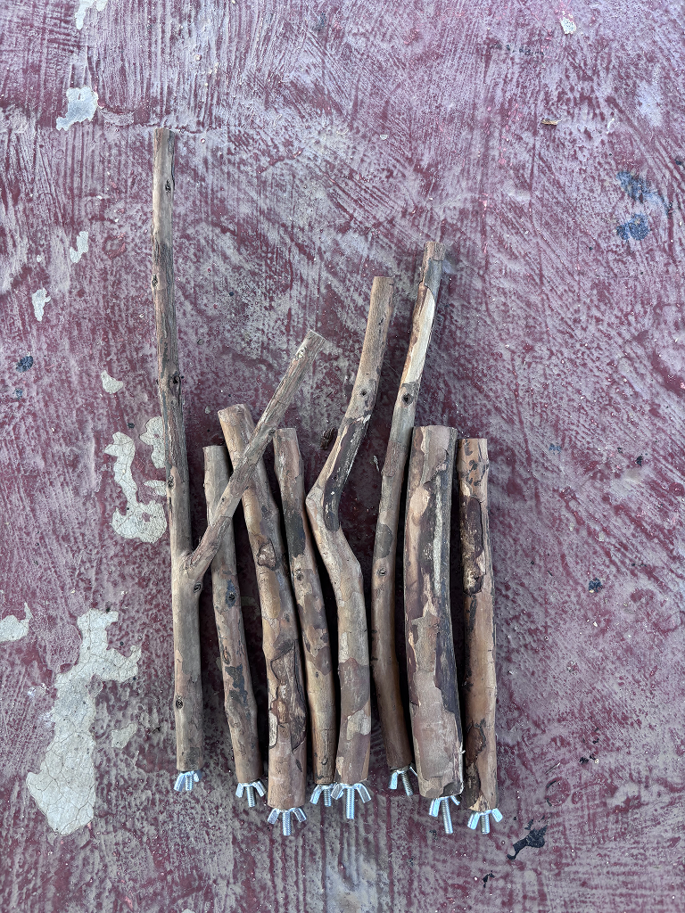
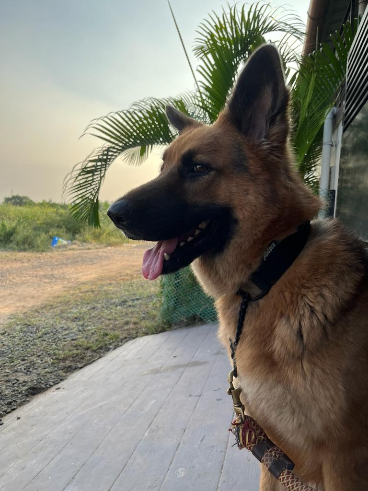
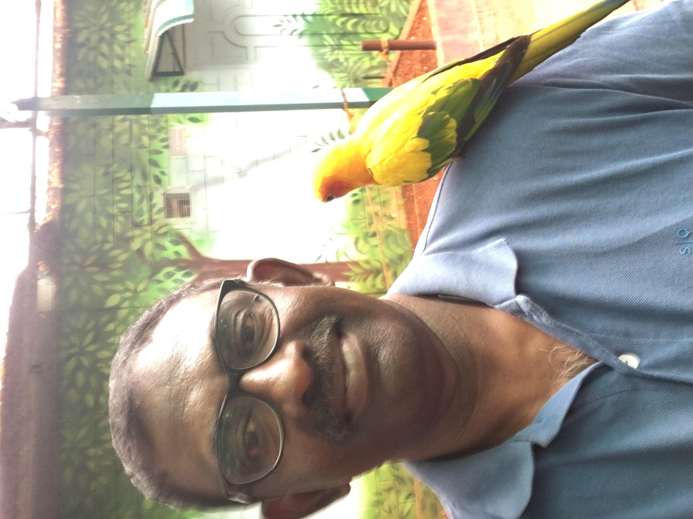
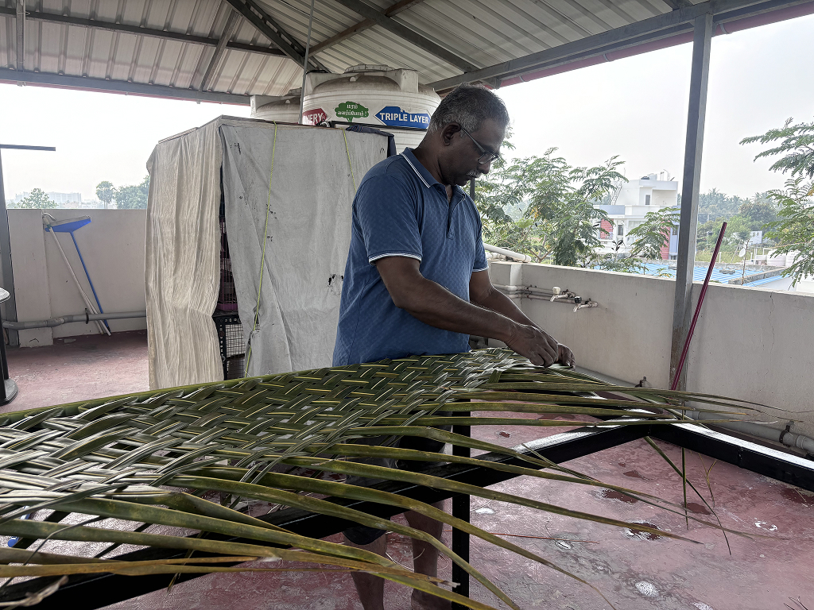
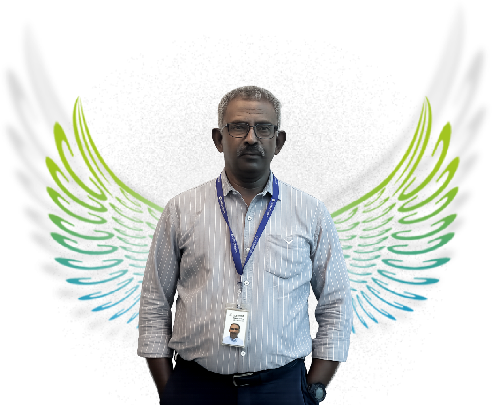

About Me
HFI - Certified Usability Analyst | Chennai, India | 20+ Years Experience
Summary
My career spans over 25 years, evolving from graphic design to development and ultimately UX leadership. This journey has shaped how I think- always balancing creativity with usability and business goals. I've spent 5 years working in the USA, where I gained global exposure and learned to design for diverse users and cultures. Today, I focus on mentoring designers, nurturing creativity, and leading UX strategies that turn complex systems into simple, human-centered experiences.
I believe great design is not just about interfaces-it's about clarity, empathy, and measurable impact.
Beyond Work
A glimpse into what keeps me inspired outside of my professional life.

Woodworking

My German Shepherds

Mini Aviary

Handmade Crafts
